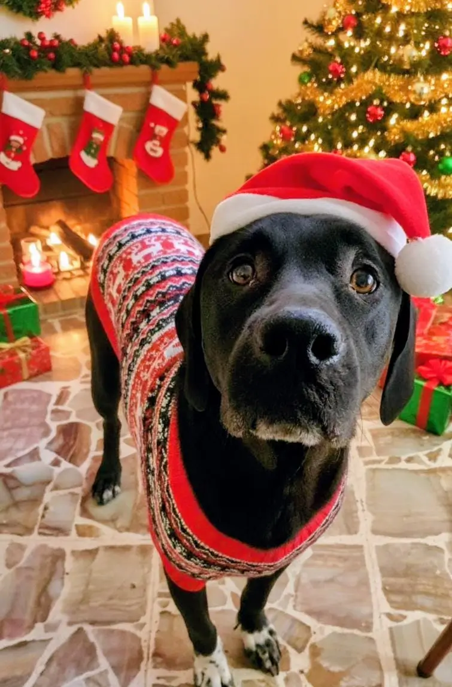
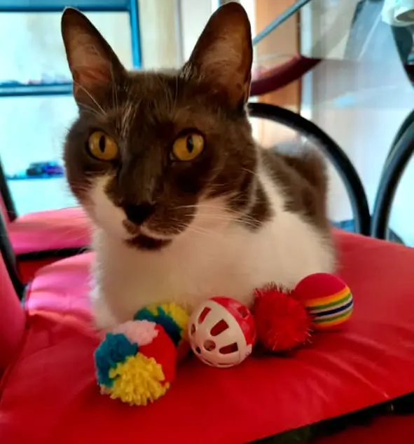
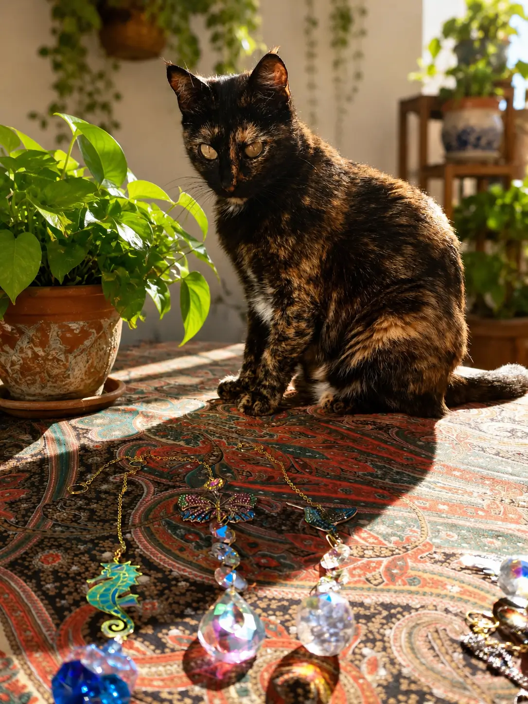
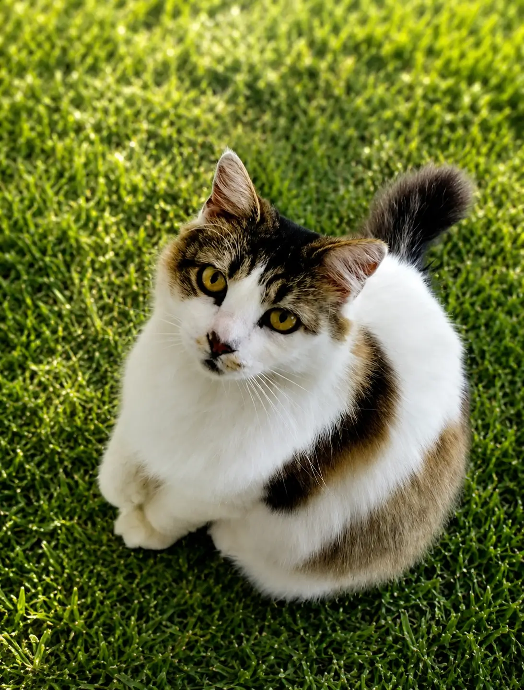
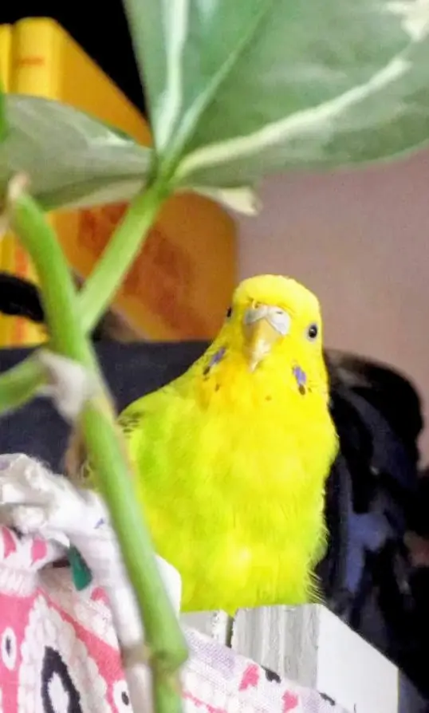
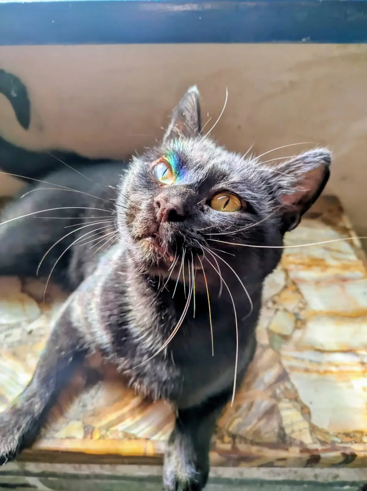
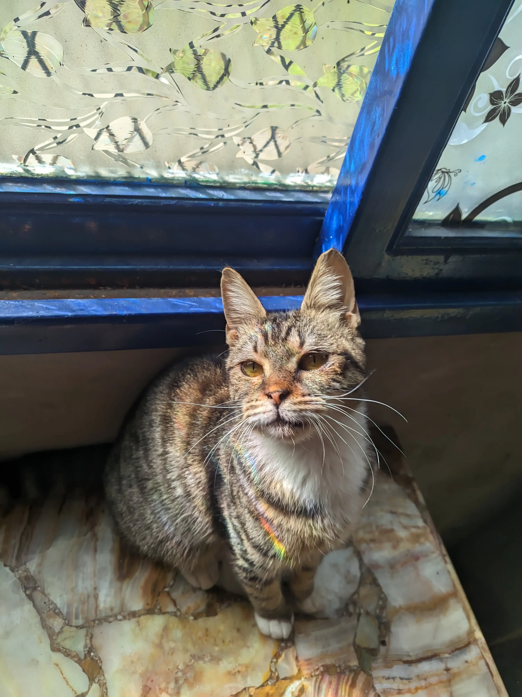
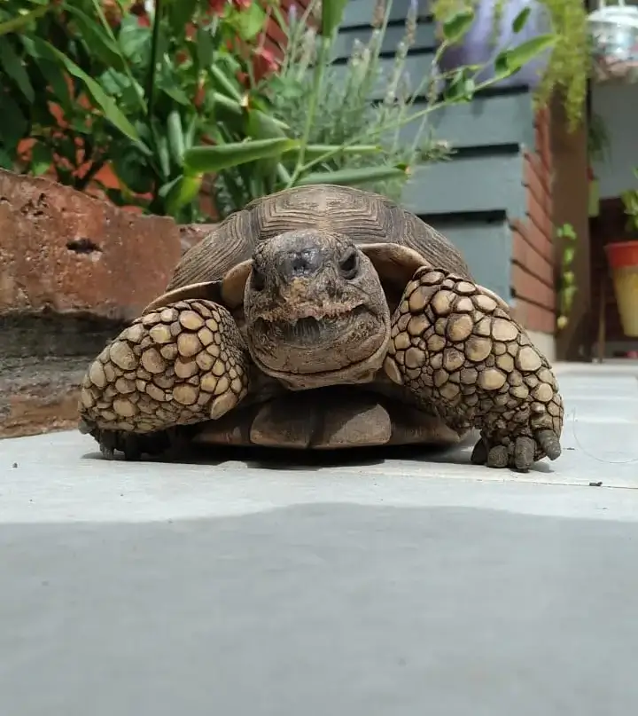
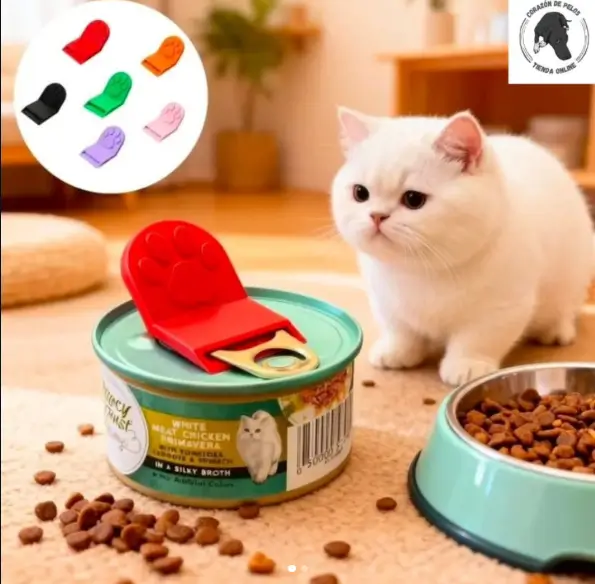
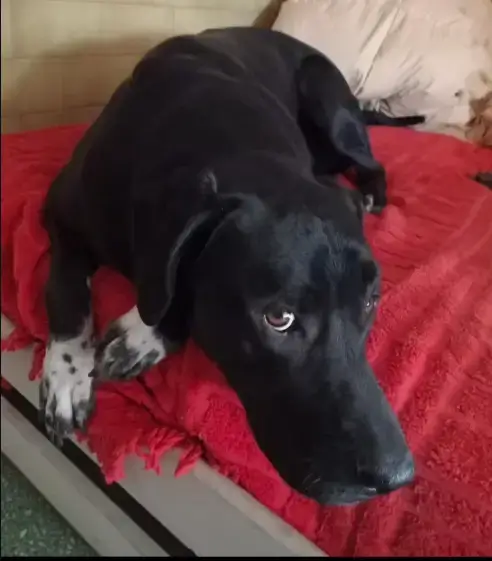

Darcy
El CEO de 4 patas
Les doy la bienvenida a Corazón de Pelos, mi nuevo proyecto lleno de amor y creatividad . Soy amante de los animalitos y de los pequeños detalles que alegran el alma.
"Corazón de Pelos" nació del amor por esos seres que nos llenan la vida de alegría y ternura. Pensado para que lleves su huellita siempre cerca del corazón: ya sea para celebrar a tu compañero actual o para mantener vivo el recuerdo de esa mascota que ya no está físicamente, pero dejó una huella imborrable.
Ellos inspiran cada detalle, testean los productos y dirigen el proyecto.

El CEO de 4 patas

Catadora de juguetes y terapeuta

Directora de videos (ella dice cuándo termina la filmación)

La gerenta nostálgica

RRPP y gata amigable

Jefa del sector plumas y auditora chillona

Escapista profesional

Verificación de calidad y catadora

El pelado del grupo y contador
Una selección exclusiva de accesorios importados, elegidos con todo el amor y dedicación que nuestras mascotas merecen.

Ellos nos enseñaron que el amor verdadero no necesita palabras. Son los mejores compañeros del mundo: entienden cada uno de nuestros estados de ánimo, nos reciben siempre con la misma alegría y llenan nuestro hogar de una felicidad genuina. Son, sin dudas, el motor de este proyecto.

"¡El del logo soy yo!" — Darcy 🐾